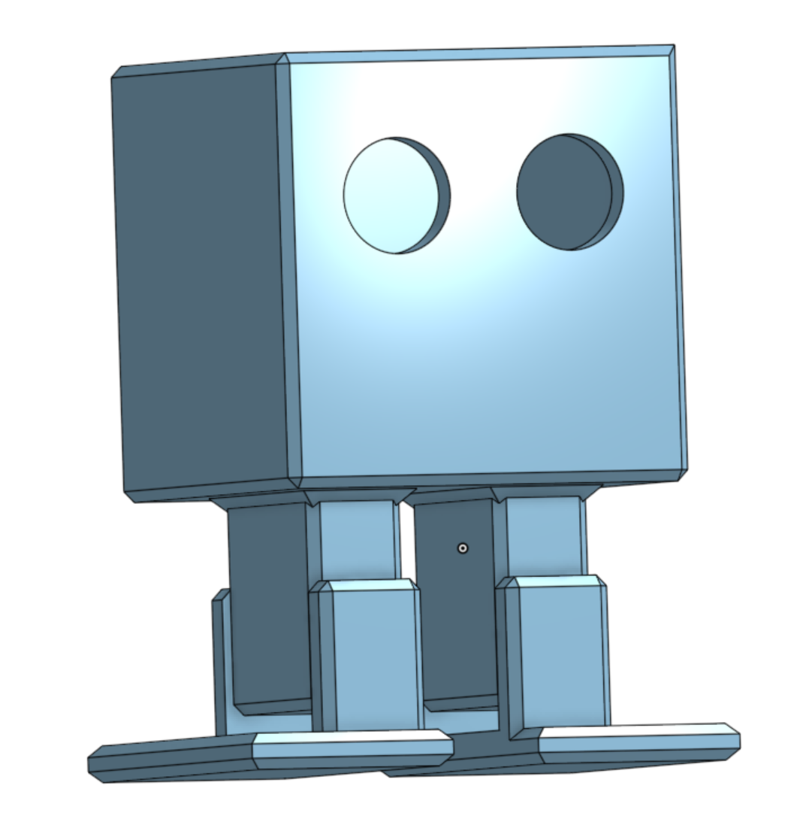
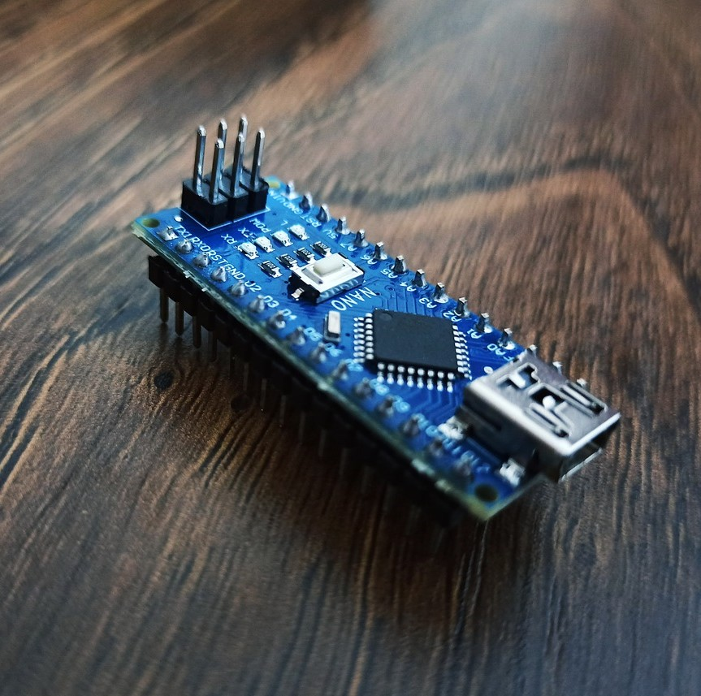
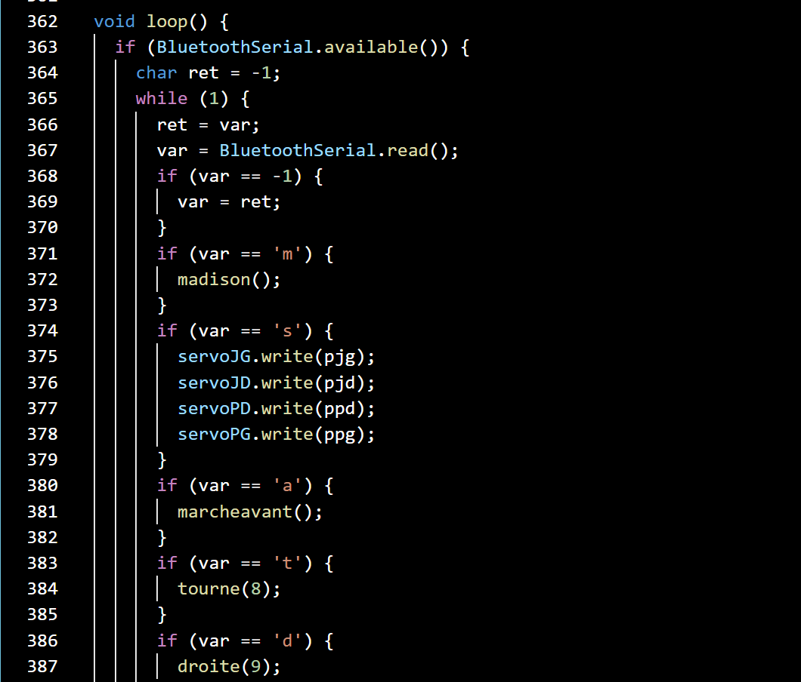

Otto Robot
Introduction
 The Otto robot is an open-source project with various forms and approaches. I have undertaken this project with the aim of starting from scratch to learn, and it is entirely possible to skip one or more steps if they don't interest you. I completed the steps in the following order: modeling the robot's parts, developing the electronic system, and writing the robot's code, followed by improvement.For each step, you will find a quick presentation of my work and detailed documentation by clicking on "Learn More".
The Otto robot is an open-source project with various forms and approaches. I have undertaken this project with the aim of starting from scratch to learn, and it is entirely possible to skip one or more steps if they don't interest you. I completed the steps in the following order: modeling the robot's parts, developing the electronic system, and writing the robot's code, followed by improvement.For each step, you will find a quick presentation of my work and detailed documentation by clicking on "Learn More".
Modeling

The first step consist of modelling the parts of the robot that will be later 3D printed. This includes designing the head, body, legs, and feet. I used the software Onshape for these models and then employed Ultimaker Cura to 3D print them.This step-by-step approach not only ensures the robot looks as intended but also allows for easy changes or upgrades down the road.
Electronics

Subsequently, the electronic design phase comes. I decide to use an Arduino Nano as the central processor. The next step involves soldering a perfboard to accommodate the Arduino, a power converter, four servo motors, a battery, and a switch. The choice of a perfboard is deliberate because it provides a flexible platform for potential future expansions and it is a great way to learn how to weld. This includes the incorporation of additional modules such as an ultrasonic sensor or a bluetooth module.
Programming

Now, it is time to program the robot's behavior. Arduino's user-friendly interface, extensive library support and the ease of use make it an ideal choice. I employ the Arduino IDE to upload our code into the Arduino. To control the servo motors, i use the servo.h libraries.
Improvement
The robot is currently capable of moving and designed with the potential for further improvements. I add a Bluetooth module to enable remote control of the robot from a smartphone, along with an ultrasonic sensor for obstacle detection. With the integration of a Bluetooth module, users can now control the robot using their smartphones, offering a more versatile and user-friendly experience.